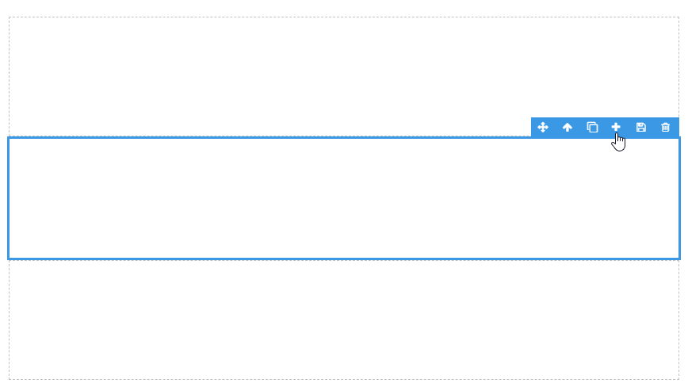

Stacked Layout Horizontal & Vertical
Horizontal Stacked Layouts separate a given area into columns. Vertical Stacked Layouts separate a given layout into rows. Columns or rows can be added or reduced to change the layout. This Block can be useful if the position of the page contents needs to be displayed right-to-left or top-to-bottom.
Add a Box to the Horizontal Layout
To add a horizontal pane, select a pane and click on the plus symbol in the top-right Block toolbar.
Delete a Box in the Horizontal Layout
To delete a horizontal pane, select a pane and click on the delete 'bin' symbol in the top-right block toolbar.

Add a Box to the Vertical Layout
To add a Box to a Vertical Layout, select a pane and click on the plus symbol in the top-right block toolbar.

Delete a Box in the Vertical Layout
To delete a vertical pane, select a pane and click on the delete 'bin' symbol in the top-right block toolbar.

Horizontal and Vertical Layout Properties
Appearance
Common Properties
The visibility property is common to most Blocks;
See the Common Properties article for more details on common appearance properties.
Data Source
Common Properties
The Vertical and Horizontal Layouts have properties that are common to most Blocks: filter, sort, show # of results, skip # of results, and show default row;
See the Common Properties article for more details on common Data Source properties.
Last modified: December 01, 2025